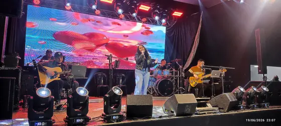
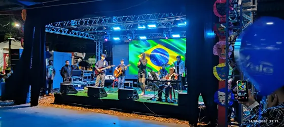
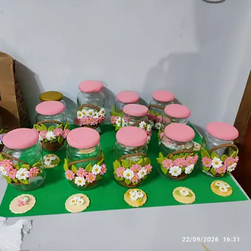

Arte e cultura.
Para toda Palotina.
Conheça nossas oficinas, explore os espaços culturais e participe da vida cultural da cidade.

A cultura transforma.
A gente faz junto.
O Departamento de Cultura de Palotina é o principal espaço de gestão, fomento e realização de atividades artísticas e culturais do município. Um ponto de encontro para a criatividade, a expressão e as tradições da nossa cidade.
Aqui, diferentes linguagens artísticas se encontram. Das primeiras notas musicais aos passos de dança, cada descoberta é uma nova forma de participar da vida cultural de Palotina.
Acompanhe no Instagram →Eventos que fazem
parte da cidade.
 2026
2026FEMUSE
Publicações e informações sobre o FEMUSE compartilhadas pela Cultura de Palotina.
Explorar o evento →
2026Canta Palotina
Publicações e informações sobre o Canta Palotina.
Explorar o evento →
2026Cultura Expo
Conteúdo e registros da Cultura Expo em Palotina.
Explorar o evento →
2026Curso Biscuit
Conteúdo e registros do Curso Biscuit em Palotina.
Explorar o evento →Uma cidade.
Muitas formas de criar.
Explore as oficinas do Departamento de Cultura. Para saber sobre turmas, horários e vagas, fale com nossa equipe.
28 oficinas encontradas
Nenhuma oficina encontrada. Tente outro nome ou categoria.
A cultura nos aproxima.
Conheça nossos espaços.
Encontre os endereços e contatos das instituições culturais de Palotina.
 Conhecer o espaço →
Conhecer o espaço →
Departamento de Cultura
O principal espaço de gestão, fomento e realização de atividades artísticas e culturais de Palotina.
ENDEREÇO
Rua Eurico Gaspar Dutra, 706 — Centro
Palotina — PR
ATENDIMENTO
7h30 às 11h30 · 13h30 às 17h30
Publicações da Cultura 2
Conheça o Departamento de Cultura
📍✨ O Departamento de Cultura tem endereço certo! O Departamento de Cultura está de portas abertas para você! Venha conhecer, participar e valorizar a arte e a cultura da nossa cidade. 📌 Rua Eurico Gaspar Dutra, 706 – Centro Nossa cultura, nossa identidade! 🎭🎶📚
Ver publicação no Instagram →Fale com a Cultura pelo WhatsApp
✨ Agora ficou ainda mais fácil participar das nossas atividades culturais! A Cultura agora tem WhatsApp 📲💚 Quer saber sobre oficinas, cursos, eventos ou tirar dúvidas? É só chamar! 📞 (44) 3913-1131 Estamos prontos para te atender! #Cultura #OficinasCulturais #palotina
Ver publicação no Instagram → Conhecer o espaço →
Conhecer o espaço →
Biblioteca Pública Municipal Castro Alves
Um espaço para descobrir histórias, ampliar conhecimentos e explorar o acervo pelo catálogo online.
ENDEREÇO
Rua Ipiranga, 720 — Centro
Palotina — PR
ATENDIMENTO
Segunda a sexta-feira · 8h às 11h30 e 13h30 às 17h30
 Conhecer o espaço →
Conhecer o espaço →
Teatro Municipal Ludovico Riedi
Um espaço amplo, moderno e equipado para apresentações artísticas, espetáculos musicais, peças teatrais e eventos locais.
ENDEREÇO
Rua Getúlio Vargas — Centro
Palotina — PR
Entrada, estacionamento e banheiros acessíveis para pessoas em cadeira de rodas.
ATENDIMENTO
Consulte o Departamento de Cultura sobre as atividades do teatro.
 Conhecer o espaço →
Conhecer o espaço →
Museu Municipal Antônio Bernardino Daniel
Também conhecido como Museu Público de Palotina. Seu acervo reúne peças, documentos e objetos antigos doados por pioneiros da região, do mundo analógico ao digital.
ENDEREÇO
Rua 24 de Junho, s/n — Lago Municipal
Palotina — PR
Entrada gratuita.
VISITAÇÃO
Confirme os horários por telefone antes de visitar.
 Conhecer o espaço →
Conhecer o espaço →Escola Municipal de Artes Gasparzinho
Uma instituição pública de ensino em Palotina, Paraná, voltada ao desenvolvimento artístico, cultural e educacional de crianças.
ARTE DESDE A INFÂNCIA
Um espaço dedicado à formação artística e cultural das crianças do município.
INFORMAÇÕES SOBRE A ESCOLA
Consulte o Departamento de Cultura para confirmar endereço, atendimento e informações sobre as atividades da escola.
Notícias e encontros
Conheça o Departamento de Cultura
📍✨ O Departamento de Cultura tem endereço certo! O Departamento de Cultura está de portas abertas para você! Venha conhecer, participar e valorizar a arte e a cultura da nossa cidade. 📌 Rua Eurico Gaspar Dutra, 706 – Centro Nossa cultura, nossa identidade! 🎭🎶📚
Ver publicação no Instagram →Fale com a Cultura pelo WhatsApp
✨ Agora ficou ainda mais fácil participar das nossas atividades culturais! A Cultura agora tem WhatsApp 📲💚 Quer saber sobre oficinas, cursos, eventos ou tirar dúvidas? É só chamar! 📞 (44) 3913-1131 Estamos prontos para te atender! #Cultura #OficinasCulturais #palotina
Ver publicação no Instagram →